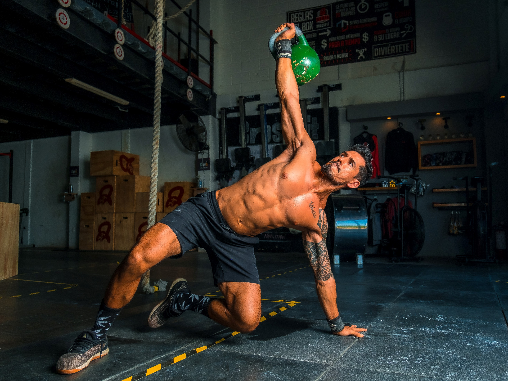

Физическая активность в любом возрасте положительно влияет на физическое и психическое здоровье, улучшает качество жизни. Живя в движении, взрослые люди могут снизить риски развития и предотвратить последствия заболеваний опорно-двигательного аппарата.
Не забывайте, что любую физическую активность нужно начинать с разминки. Она занимает всего 5-10 минут времени и позволяет подготовить ваше тело к более интенсивным нагрузкам. Что дает разминка? Повышает гибкость, снижает риски получения травм, убирает напряжение в мышцах и болезненные ощущения, увеличивает кровоток, улучшает производительность и позволяет выполнять движения более амплитудно. Наиболее эффективными для похудения являются упражнения для всего тела, а не направленные на конкретные мышцы. Лучше их миксовать в одной тренировке, либо равномерно распределять в течение недели, нагружая в каждый из дней разные участки тела. Сосредоточьтесь на высокоинтенсивных занятиях, которые быстро увеличивают частоту сердечных сокращений и позволяют сбрасывать вес интенсивнее.
Чтобы тренировки дома не надоедали, придумайте для себя небольшие правила или ритуалы:
✔ Например, вы можете заниматься спортом, смотря любимую передачу, слушая подкаст или аудиокнигу.
✔ Делайте упражнения во время рекламных пауз в ваших любимых сериалах.
✔ Установите напоминания в своем телефоне или оставляйте заметки по дому, которые будут напоминать сделать зарядку или какое-то упражнение.
✔ Делитесь результатами и планами с близкими и друзьями, это поможет не сдать назад, когда лень будет брать верх.
✔ Ставьте себе цели, которые поддержат мотивацию, например, участие в небольшом забеге или необходимость влезть в любимое платье до определенной даты.
✔ Создайте расписание занятий.
✔ Купите новые лосины или кроссовки, если такой способ способен привести вас к действиям.
✔ Сделайте бытовую рутину похожей на тренировку, меняйте местами предметы обихода, чистите овощи, делая упражнение «стульчик у стенки» или найдите иной способ органично вписать нагрузки в свою ежедневную рутину.
✔ Кардиотренировку дома может заменить спуск и подъем по лестнице.
Поговаривают, что привычки формируются 21 день. Самое время проверить!
by Mariya Likhacheva. Сайт создан в учебных целях